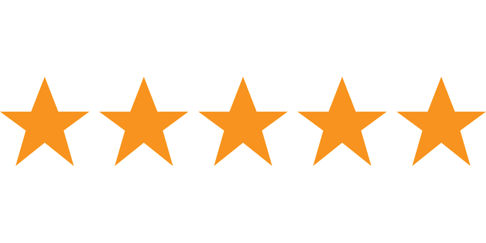

.png)
P.Ploeger
5 maanden geleden
Mooie rugbyclub midden in Den Haag! Goede jeugdbegeleiding, gezellige sfeer, iedereen is welkom.

Ljamis Khalaf
een jaar geleden
Hele leuke Rugby Vereniging! Heel gastvrij en vriendelijk en plezier staat voorop!
Mijn zoon is via de clinics lid geworden. 2x per jaar organiseren ze 5 weken lang een training voor de jeugd. Dit is gratis en dan kan je kennis maken met de sport!
Super leuk!
Hadrien Lacoste Lagrange (HadrienLL)
7 jaar geleden
Good international rugby club. Great atmosphere in a warm and cosy club house. The pitch is well maintained even though we are training twice a week. First team is competitive and the second more relax for new players or the elders still playing. Parking around is easy and free.
PePijntJ
2 jaar geleden
Went to visit a mate's game (he's one of the Hornets). Witnessed 2 guys getting taken to the hospital with an ambulance. One hurt on the field and one almost drank himself to his death. (Tricolore) Nice beer and 'broodjes bal'.
Couldn't have had a better day, 10/10.